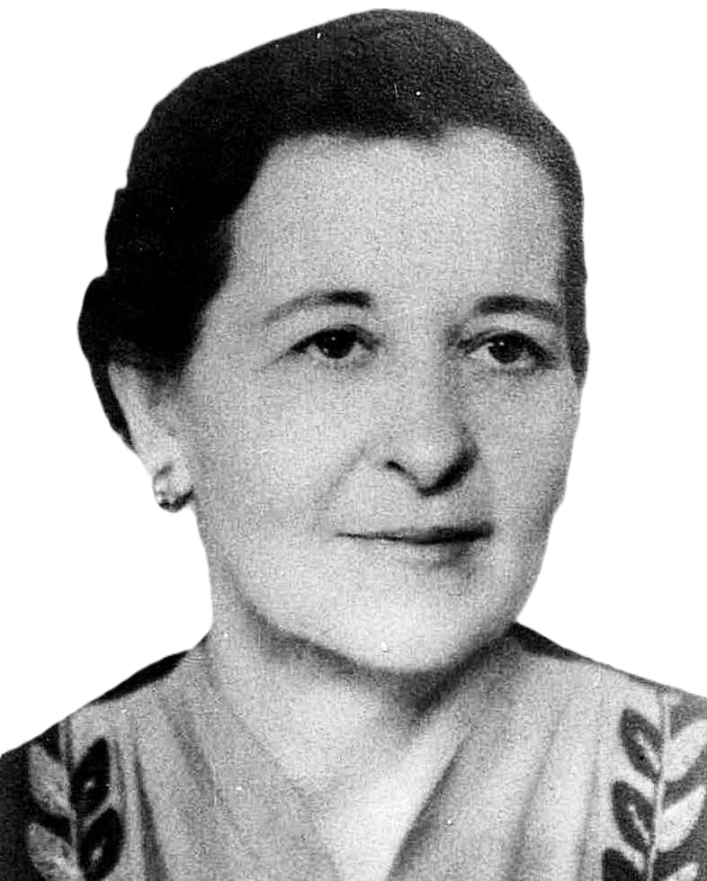
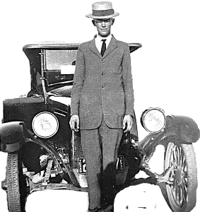

This page was last modified EST.
Both Linda and Father were gay this morning. There was much work to be done in the morning, but after lunch someone very wonderful was coming to see them. This made all the family happy, especially Linda.

She knew the plans made for her today. Last night Father had told her she must plow for a half day until her brother, George, should return from town. The car must be repaired and George should see that it was done. The repair work would require only half a day. At noon, George would take the plow.
"It was hard work to plow she knew, as she had done it before. But today because of a wonderful secret and because someone special was coming, she did not mind the hard work.
